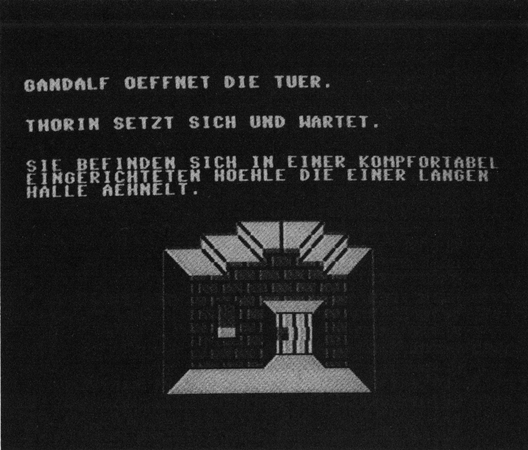

Der kleine Hobbit
Erforschen Sie das Land der Fantasie. Finden Sie einen Schatz im Land der Elfen und Magier. Entrinnen Sie den bösen Mächten.

Der kleine Hobbit ist im Prinzip nichts weiter als die deutsche Version eines der meistverkauften englischen Adventures überhaupt (sechsstellige Verkaufszahlen!): »The Hobbit« von Melbourn House. Bereits im ersten Adventurekurs (Sonderheft 2/85) habe ich Ihnen dieses Spiel, insbesondere seinen Parser, beschrieben. In der Tat, die Spectrum-Version von »The Hobbit« machte dieses Programm aufgrund seines ausgezeichneten Parsers (der lange als Standard bei Adventure-Tests betrachtet wurde) berühmt. Das folgende Listing ist eine deutsche Grafikversion des Hobbits von J.R.R. Tolkien. Natürlich wurde das englische Programm nicht einfach ins Deutsche übersetzt und die Handlung 1:1 übernommen. Ich habe den »kleinen Hobbit« vielmehr programmiert, nachdem ich sämtliche Tolkien-Bücher studiert habe. Die deutsche Hobbit-Version ähnelt nicht zuletzt deshalb viel mehr der Handlung des Buches als die englische es tut. Dieses Programm soll keineswegs eine Konkurrenz zum englischen Hobbit sein, sondern vielmehr ein kleines Tolkien-Adventure für alle, die kein Englisch können. Der Parser des Spiels ist ausgezeichnet und versteht ganze Sätze. Hervorzuheben sind auch die einzeln handelnden Personen im Spiel: Thorin, Gandalf, Gollum und die Orks laufen im Spiel selbständig umher. Der Spieler kann mit diesen Personen sogar Unterhaltungen führen. So etwa in der Form: »SAG THORIN ›GIB MIR DEN SCHLÜSSEL‹«. Allerdings ist hierbei noch die Frage gestellt, ob die Personen dieses auch immer tun. Man muß manchmal schon hartnäckig darauf bestehen, um etwas zu erreichen... »SAG THORIN ›HOLE BIER‹, SAG THORIN ›HOLE BIER‹, SAG THORIN ›HOLE BIER‹«... Mit etwas Geduld wird man erreichen, was gewünscht ist.
»Den kleinen Hobbit« habe ich bereits vor einem Jahr parallel zu »Gordon Saga 1« programmiert. Daher ähnelt sich auch die Grafik der beiden Spiele stark. Zusammengesetzt aus den Standard-Zeichensätzen, aber oft umwerfend gut gelungen.
Für Tolkien-Fans gibt es hier einfach keinen Kompromiß: Abtippen und Spielen!
(Michael Nickles/dm)